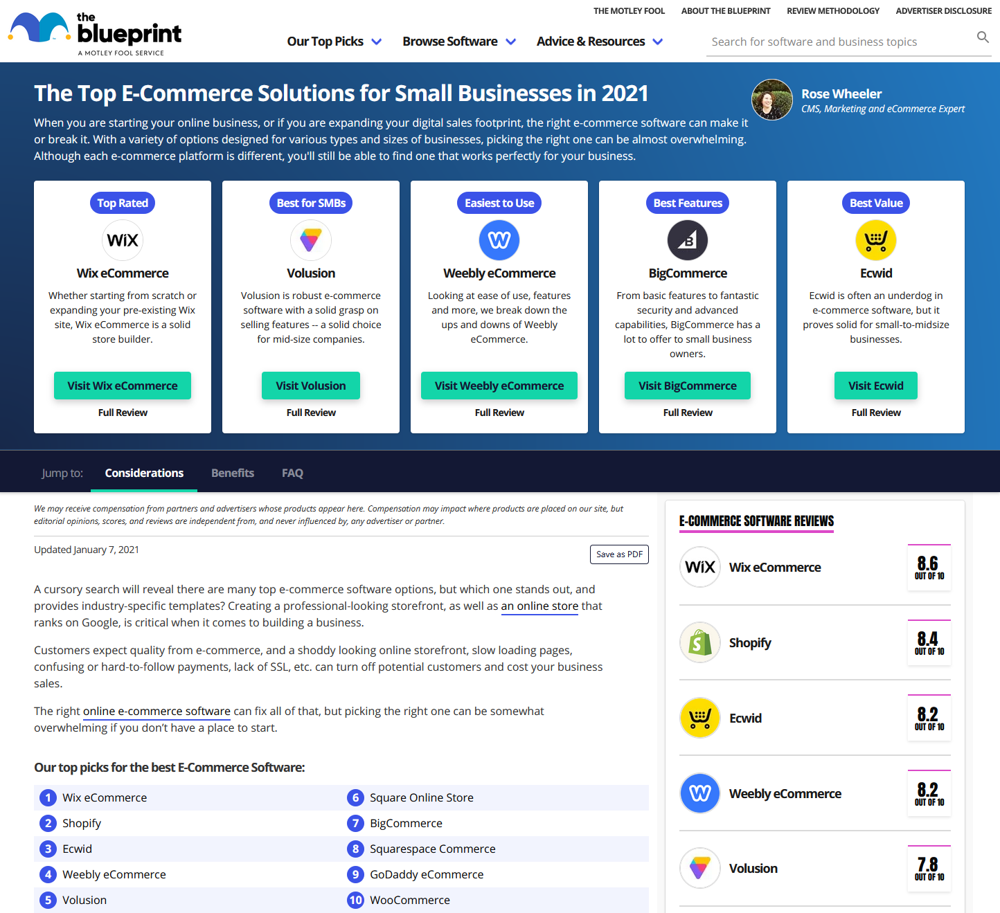
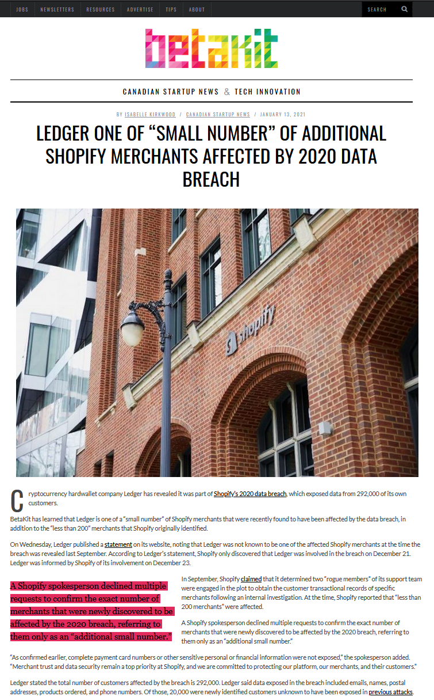

About that "E" in E-commerce - Jacky Giang
Hello all and happy Friday! Thank you Sean for coordinating and thank you to you for listening to me meditate on a seemingly trivial subject matter that I imagine everybody in this room is familiar with. However, I feel it’s important for you to act as educators as you help your clients or those with curious minds navigate the world of e-commerce. Modern-day companies are relying on e-commerce to keep their lights on. But they are failing to acknowledge the “E-” in e-commerce, so much so that I simply need to talk about it. More on the format of this presentation, if there are any questions throughout, kindly submit them in the Remo Question tab and I’ll address them at the end. A disclaimer: these are solely my opinions so please exercise critical thinking before assuming them for your own use. Without further ado, let’s get into it!
What is Commerce?
Let’s start at the very beginning and ask the question, What is Commerce?
Generally, it’s the system to allow for the exchange of one thing for another thing...
To me, generally speaking, it is the system that allows for the exchange of one thing for another thing. Commerce existed well in the BC days of yore. But, we’re going to find ourselves in the medieval days of yore.
Source: Catalan Atlas, Abraham Cresques, 1375.
I recently stumbled upon this luscious Catalan Atlas from the 14th century and we’re going to stay here for awhile. Looking closely, you can see different caricatures and iconography, which I’m inferring as the vivid depictions of all the elements of life and an economy supported by commerce. You’ll also notice that the map is laced with lines, or rightfully the rhumbline network, acting as the modern day equivalent of longitudes and latitudes for navigation. Tracing them, they start and terminate into different nodes presenting a grid system underlying all the elements of commerce.
Commerce requires mutiple actors in order to conduct business.
What is the purpose of the actors? Well, commerce requires multiple actors to conduct some kind of business.
Commerce requires mutiple actors in order to conduct business.
A concerted conduct of business will then stimulate the larger economy that governs it.
A concerted conduct of business will then stimulate the larger economy that governs it.
Trade
Exchanging goods or services
"Double coincidence of wants"
Globalization
Money to facilitate trading
Expanding on each actor of commerce...
Transport
From Point A to Point B
Raw materials to finished product
Finished product to customer
Exchanges and returns
The Transportation actor manages the raw materials to the finished product. It also includes how raw materials get to your manufacturers to be processed, assembled, and packaged in order to produce your finished product. Then, getting your finished product to the hands of your customer… and unfortunately, sometimes the other way around, getting your product back from your customer.
Warehouse
Manufacturing and Storing
Storing raw goods
Storing finished products
Packaging and shipment preparations
This Manufacturing and Storing actor manages how your manufacturers store and process the raw materials to be assembled into your finished product, as well as the storing and packing of the finished product to be ready to ship to your customer.
Communicate
Messaging and Feedback Loops
Press releases and newsletters
Customer support and product reviews
Order and shipment status updates
This Messaging and Feedback Loop actor manages the voice and messaging of your business through various mediums of advertising and dissemination. They’re also responsible for customer communication and building customer relationships.
Finance
Revenue and Inventory
Financial health
Insurance
Transactions and payment methods
This Finance actor manages the financial health of your business from setting budgets, calculating profit and losses, and recording transactions. They have a good pulse on inventory to make sure there’s enough collateral and impeccable accounting for insurance and auditing purposes. They also are responsible for defining different payment methods to allow customers to choose the one they’re most comfortable with for the exchange of goods or services
What is "E"- Commerce?
Another branch of the evolution of commerce is… E-commerce. Circulating back to the introduction of this presentation, what is E-commerce?
What is "E"- Commerce?
Another branch of the evolution of commerce is… E-commerce. Circulating back to the introduction of this presentation, what is E-commerce?
Generally, it’s the system to allow for the exchange of one thing for another thing...
Well, I gave it the same definition as commerce: Generally, it’s the system to allow for the exchange of one thing for another thing… Here’s the twist though: it is done...
Brick and Mortar vs "E"- Commerce
Actors
Brick and Mortar
"E"- Commerce
Trade
Customer figures out a way to reach the physical storefront
Customer loads the e-commerce website on their internet-connected smart device
Transport
On the customer to pack and move the purchased goods back home
On the business to coordinate warehouses and shipping carriers
Warehouse
Stocked inventory on display at the storefront or in the backoffice
Stocked inventory at warehouse, availability communicated on product pages
Communicate
In-store cashiers and support staff to assist customers
On-screen instructions to self-checkout, self-discovery on product pages, live chat, social, and FAQs
Finance
Cashiers at storefront to report drawer totals to management at the end of each day
Transactions recorded as soon as order is placed
When comparing brick and mortar to e-commerce, brick and mortar relies more on your customer to do a lot of the heavy lifting. For example, they are responsible for finding a way to your store, picking the goods they want to buy, and transporting all of it back home themselves. With e-commerce, the heavy lifting falls actually on the business to figure out. They have to arrange a series of actors that allows the customer that luxurious convenience of shopping with their thumb on their internet-connected smart device.
Attributes
Brick and Mortar
"E"- Commerce
Medium
Offline, doesn't require an internet connection
Online, requires an active internet connection
Setup
Design, build out a physical store, and pay property taxes and utilities
Register domain name, host app on the cloud, and pay hosting fees
Hours
Open during regular business hours
Open 24/7 (depends on the network and your servers)
Personnel
Cashier, custodian, customer service, store manager, greeter, stock clerks, etc...
Someone who has an entreprenuerial spirit to connect all the dots
Startup Costs
$$$$$
$
You can see why e-commerce is so appealing though. If you have the drive, you can spin up an e-commerce store in less time than you could open up a physical brick and mortar store. The power of being technologically enabled is indeed a very powerful tool.
Attributes
Brick and Mortar
"E"- Commerce
Medium
Offline, doesn't require an internet connection
Online, requires an active internet connection
Setup
Design, build out a physical store, and pay property taxes and utilities
Register domain name, host app on the cloud, and pay hosting fees
Hours
Open during regular business hours
Open 24/7 (depends on the network and your servers)
Personnel
Cashier, custodian, customer service, store manager, greeter, stock clerks, etc...
Someone who has an entreprenuerial spirit to connect all the dots
Startup Costs
$$$$$
$
You can see why e-commerce is so appealing though. If you have the drive, you can spin up an e-commerce store in less time than you could open up a physical brick and mortar store. The power of being technologically enabled is indeed a very powerful tool.
Real Talk.
The most appealing factor of e-commerce is the low overhead and startup costs.
The most appealing factor of e-commerce is the low overhead and startup costs
Real Talk.
The most appealing factor of e-commerce is the low overhead and startup costs.
The most troubling factor of e-commerce is the engineering that makes it seem too good to be true.
However, the most troubling factor of e-commerce is the engineering that makes it seem too good to be true. What do I mean by that?
Too Good To Be True?
Let's talk about your e-commerce application and its network.
Let's talk about your e-commerce application and its network.
The Actors of E-Commerce.
... and make the parallel to a network of e-commerce actors. Actors work with each other to bring about specific functions.
Function: Order Confirmation.
For example, this is a general order confirmation mapping. As soon as a customer purchases a product from your website (Point A), a transaction is captured and recorded in your payment system (Point B), then the customer is sent a receipt to confirm the completion of their order (Point C). Simple enough right?
Function: Shipment Notification.
Another example that’s a little more complex, the shipment notification. As soon as the order is placed (Point A), a payload is sent to your warehouse (Point B). Your warehouse might be using some middleware that intercepts your payload at Point A’ and translates it to a warehouse-friendly format. Your warehouse then picks and packs the items in the order (Point B) and a payload is sent from your warehouse to your shipping carrier to generate a shipping label to inform Transportation about a new shipment to be delivered to your customer (Point C). Like the warehouse middleware, there could also be a Transportation middleware (Point B’). The warehouse applies the label to the package and moves it to the staging area for transportation to pick up. When transportation picks up the package, a payload is sent back to your store and your customer is informed that their order is headed their way (Point C’).
Function: Shipment Notification (SaaS).
Okay, well that was a huge mouthful. What a wonderfully wild game of telephone?! To think this happens to 10 orders per day… okay, that seems manageable. Let’s dial it up to over 1000 orders per day. With a business that’s running open 24/7, how can you be sure that your actors are reliable at every moment? How can you be sure your connections to your actors are consistent and stable when you don’t have control at some points?
The Problem of E-Commerce.
Well this is the problem of e-commerce. I’m sure that haunts all of you here. You need to own your connections, or as many of them as possible. However, there’s a balance between what should be in your domain and which actors/partners you can trust to help you close the feedback loops in your business so you can stay focused on your brand. With that, let’s add on to the definition of e-commerce.
What is the "E"- Commerce Application?
Electronic connections between the actors
Functions at every node to help actors automate their processes
Completion of feedback loops made successful by reliable actors
Help educate your clients on the importance of owning these connections.
What is the E-Commerce Application? It is the electronic connections between the actors. It is the functions at every node to help actors automate their processes. It is the completion of feedback loops made successful by reliable actors. Help educate your clients on the importance of owning these connections.
Too Good To Be True?
Let's talk about the infrastructure hosting your application.
Continuing on with point 2, let’s talk about the infrastructure hosting your application.
Infrastructure
Attributes
"E"- Commerce
Medium
Online, requires an active internet connection
Setup
Register domain name, host app on the cloud, and pay hosting fees
Hours
Open 24/7 (depends on the network and your servers)
Personnel
Someone who has an entreprenuerial spirit to connect all the dots
Startup Costs
$
Revisiting the values of what makes e-commerce so appealing, there are a couple of attributes that I feel like the average client will breeze right past. In particular, these are the implications from having a hosted application and it being accessible 24/7 on any internet-connected smart device. Rather than having a physical building and paying for electricity, water, and gas. You’ll be paying hosting fees as a result from renting space on some server to house your application as well as the traffic it receives. Sounds like an excellent tradeoff if you ask me!
Source: Take My Money, memecandy
If met with disengaged clients as you begin talking about infrastructure, consider it a good time to sit down with your client and really spell it out past the dollar amount. Much like having good plumbing, having a good infrastructure will help with sleeping at night. Help your clients understand that their application and infrastructure are two different things, preferably managed by separate people or even teams.
The Actors of E-Commerce.
The application houses the e-commcer functions of your actors.
Application Layer
The application houses the e-commcer functions of your actors.
Infrastructure Layer
While infrastructure wraps it and throws it on the cloud for all those connected to the internet to see. This begs the question of cybersecurity. But, we won’t get into that. Know that firewalls and other controls will absolutely be something that you can explore to enhance the overall protection of your client’s business. Now being on the cloud, infrastructure also allows the application to connect with other applications, such as your client’s partner’s SaaS products. These connections are probably going to be the most powerful utility of the application. It’s the ability to send and receive data to help your client unlock more of their business potential. Remember that your client is running an e-commerce company. They’re probably not large enough to be a logistics company yet. So help them find a partner you both can trust and connect to them through the cloud.
Now you can connect to anything! (Permissions granted)
Yikes.
Source: Marketing Technology Landscape, Chief Martec, Scott Brinker, 2020-04-22.
Past the partners, the app is also ready to connect to the magnificently colorful world of other applications (at a recurring nominal fee of course because they too have to pay hosting fees and have a business to run)! The technology is riddled with too many choices and aggressive marketing. How do we, as tech consultants, help businesses thwart the teeth of marketing from sinking and locking them into unnecessary web services? I’m sure you have all heard about that niche web service that magically solves all of a business’ pain points with a click of a button all while fabricating the onboarding to be cunningly seamless.
What is the "E"- Commerce Infrastructure?
E-commerce functions are housed within the application
Application is hosted on a web server
Web server allows your application to connect to the cloud for your customers to see and integrate with so many other applications
Introduce cybersecurity measures to protect your client's data, monitor data flow, query databases, and so much more
( Do not expect developers to be network administrators and vice versa )
What is "E"-Commerce Infrastructure? E-commerce functions are housed within the application. The application is hosted on a web server. The web server allows your application to connect to the cloud for your customers to see and integrate with so many other applications. Having access to the web server allows cybersecurity measures to be introduced to protect your client's data, move between servers, monitor data flow, query databases, and so much more. On a side note: ( Do not expect developers to be network administrators and vice versa )
Help educate your clients on the importance of being on the cloud and having the option to manage the infrastructure layer.
Help educate your clients on the importance of being on the cloud and having the option to manage the infrastructure layer.
Too Good To Be True?
Let's talk about what marketers are teaching your clients.
Finally with point 3, let’s talk about what marketers are teaching your clients.
The Problem of E-Commerce.
Taking away the complicated game of telephone, this is the general idea:
"E-Commerce is Simple."
“E-commerce is simple” says the marketer. When all the actors are in synergy with one another, congratulations, the business has achieved the idyllic paradigm of e-commerce and found enlightenment. I will tell you that this simplistic representation is cunningly deceiving. E-commerce marketers have adopted an effectively creative way to repackage e-commerce to appeal to their wider audience. The wider audience in this case are small companies and for the most part e-commerce for them should be simple. Unfortunately, mid-sized companies can fall victim to its simplistic charm.
"I'm going to sell you this..."
This is what e-commerce solutions are generally selling to small companies: both application and infrastructure neatly packaged into recurring fees. Both are configured in a way to allow a seamless onboarding experience for the average business owner. The owner is typically left to figure out warehouse and transportation themselves. Conveniently, the e-commerce solution also offers a myriad of integrations to connect to many warehouse and transportation networks.
"But, I'm actually selling you this..."
Without knowing any better, and because of the ease of integration, the technology becomes platform locked without the business owner even knowing it.
Should they care?
Absolutely.
When should they care?
Maybe never!
Should they care? Absolutely. When should they care? Maybe never, and that's okay! The idea here is that you inform your clients about this so they are aware about the risks of ecommerce.
~475,000 (~95%)
Source: E-Commerce Company Market Size, Pipe Candy, Ashwini Murty, 2020-03-10.
The wider audience here is roughly 475,000 companies. How e-commerce is being marketed to be simple makes complete sense. Businesses typically are small and can remain that way without much technological prowess. Business owners should be able to seamlessly onboard to their ecommerce solution so they can resourcefully focus their efforts on product R&D, branding, and merchandising. Through discovery, they can learn more about the e-commerce technology and unlock their greater business potential. A romantic idea, right? Well, at least that’s what I hope for with any business owner in e-commerce. In reality, they want all the things to be done quickly, seem to be afflicted with mad FOMO all the time, and finding themselves changing background colors to increase conversions. But what about those companies who don't fit the standard small business mold?

Yikes.
Source: Top E-Commerce Solutions, The Blueprint, Rose Wheeler, 2021-01-07.
And before all of that, how do you even select an e-commerce solution to begin with and commit to? Obviously markets change, businesses change, and technology will need to adapt. But, how can you help your client think about an e-commerce solution that is 5 years ahead and be ready when that moment of growth comes?
How do you educate your clients between an e-commerce platform vs a e-commerce solution? Because right now, they both read the same way.
More importantly, how do you educate your clients between an e-commerce platform vs a e-commerce solution? Because right now, they both read the same way. We won't get into this topic in this presentation.
Source: Shopify Inc, Trading View, 2015-06 to 2021-01.
It’s difficult to stick out your fundamentals especially when you see the stock of an e-commerce solution take off like this over the last 5 years. You can start to understand why those who decided to follow the market even at the best of recommendations.
A Shopify spokesperson declined multiple requests to confirm the exact number of merchants that were newly discovered to be affected by the 2020 breach, referring to them only as an “additional small number.”

Source: Shopify Data Breach 2020, Betakit, 2021-01-13
Growth comes with problems, such as this data breach. For merchants affected, who do you turn to? Where do you begin to troubleshoot when you don't have access to your infrastructure? Check on the well-being of your systems administrator because they will probably not have access to the infrastructure to troubleshoot themselves. Exercise caution and sometimes your business is better without being platform-locked.
What is the Marketing of "E"- Commerce?
Saturated with too many options
Marketers simplifying the solution
Hard to distinguish platform vs solution
I give credit to the marketing teams on all solutions to reel in new ecommerce converts and invite them to summon their entrepreneurial spirit.
Educate your clients about e-commerce technology and help them understand why having access to their technology is the way to go.
However, it’s up to you as a technologist, tech consultant, developer, agency, evangelist, to educate your clients about the fundamentals of e-commerce and help them to understand why having access to their technology is the way to go.
Where do you need to be?
You need to be seated at the table and talk about that "E" in e-commerce.
Fight for a seat at the table to add friction to your clients and introduce practical e-commerce. Help them think critically about their technology selection. Offer your sound advice on choosing the right solution for their business. My worry is that companies are not given the right technical education before taking their e-commerce business online. It's your calling to help them feel confident and empowered with their technology. Plant the seeds. But, it will require a team.